Percentile
|
|
It has been suggested that percentile rank be merged into this article or section. (Discuss) Proposed since April 2009. |
In statistics, a percentile (or centile) is the value of a variable below which a certain percent of observations fall. For example, the 20th percentile is the value (or score) below which 20 percent of the observations may be found. The term percentile and the related term percentile rank are often used in the reporting of scores from norm-referenced tests.
The 25th percentile is also known as the first quartile (Q1), the 50th percentile as the median or second quartile (Q2), and the 75th percentile as the third quartile (Q3).
Contents[hide] |
[edit] Definition
There is no standard definition of percentile,[1] [2][3] however all definitions yield similar results when the number of observations is very large.[4]
[edit] Nearest rank
One definition of percentile, often given in texts, is that the P-th percentile () of N ordered values (arranged from least to greatest) is obtained by first calculating the (ordinal) rank
- 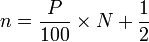
rounding the result to the nearest integer, and then taking the value that corresponds to that rank.
For example, by this definition, given the numbers
- 15, 20, 35, 40, 50
the rank of the 30th percentile would be
- 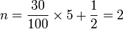.
Thus the 30th percentile is the second number in the sorted list, 20.
The 40th percentile would have rank
- 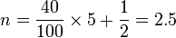,
so the 40th percentile would be the third number (since 2.5 rounds up to 3), or 35.
Note that the 100th percentile is defined to be the largest value, to prevent problems with the rank turning out to be greater than the number of values in the original list.
[edit] Linear interpolation between closest ranks
An alternative to rounding used in many applications is to use linear interpolation between the two nearest ranks.
In particular, given the N sorted values 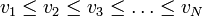, we define the percent rank corresponding to the nth value as:
- 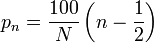.
In this way, for example, if N = 5 the percent rank corresponding to the third value is
- 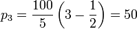.
This ensures that the sample median matches the 50th percentile.
The value v of the P-th percentile may now be calculated as follows.[5] If P < p1 or P > pN, we take v = v1 or v = vN, respectively. Otherwise, we find an integer k such that 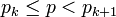, and take
- 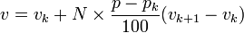.
Using the list of numbers above, the 40th percentile would be found by linearly interpolating between the 30th percentile, 20, and the 50th, 35. Specifically:
- 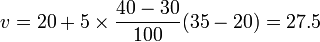
This is half way between 20 and 35, which one would expect since the rank was calculated above as 2.5.
Note that when N is even and P = 25, this formula gives the 25th percentile as the median of the first 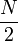 values (the median of the lower half of the data).
[edit] Weighted percentile
In addition to the percentile function, there is also a weighted percentile, where the percentage in the total weight is counted instead of the total number. There is no standard function for a weighted percentile. One method extends the above approach is a natural way.
Suppose we have positive weights 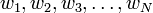 associated, respectively, with our N sorted sample values. Let
- 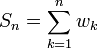,
the n-th partial sum of the weights. Then the formulas above are generalized by taking
- 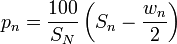
and
- 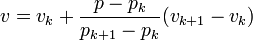.
[edit] Alternative methods
Some software packages, including Microsoft Excel[3] use the following method, noted as an alternative by NIST[6] to estimate the value, vP, of the P-th percentile of an ascending ordered dataset containing N elements with values 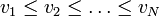.
The rank is calculated:
- 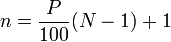
and then split into its integer component k and decimal component d, such that n = k + d. Then vP is calculated as:
- 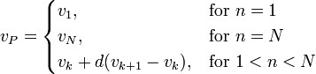
The primary method recommended by NIST[6] is similar to that given above, but with the rank calculated as
- 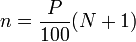
These two approaches give the rank of the 40th percentile in the above example as, respectively:
- 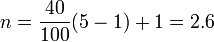
and
- 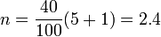.
The values are then interpolated as usual based on these ranks, yielding 29 and 26, respectively, for the 40th percentile.
[edit] Applications
When ISPs bill "burstable" internet bandwidth, the 95th or 98th percentile usually cuts off the top 5% or 2% of bandwidth peaks in each month, and then bills at the nearest rate. In this way infrequent peaks are ignored, and the customer is charged in a fairer way. The reason this statistic is so useful in measuring data throughput is that it gives a very accurate picture of the cost of the bandwidth. The 95th percentile says that 95% of the time, the usage is below this amount. Just the same, the remaining 5% of the time, the usage is above that amount.
Physicians will often use infant and children's weight and height percentile to assess their growth in comparison to national averages.
[edit] The normal curve and percentiles
{kind=link}
The methods given above are approximations for use in small-sample statistics. In general terms, for very large populations percentiles may often be represented by reference to a normal curve plot. The normal curve is plotted along an axis scaled to standard deviation, or sigma, units. Mathematically, the normal curve extends to negative infinity on the left and positive infinity on the right. Note, however, that a very small portion of individuals in a population will fall outside the −3 to +3 range.
In humans, for example, a small portion of all people can be expected to fall above the +3 sigma height level.
Percentiles represent the area under the normal curve, increasing from left to right. Each standard deviation represents a fixed percentile. Thus, rounding to two decimal places, −3 is the 0.13th percentile, −2 the 2.28th percentile, −1 the 15.87th percentile, 0 the 50th percentile (both the mean and median of the distribution), +1 the 84.13th percentile, +2 the 97.72th percentile, and +3 the 99.87th percentile. Note that the 0th percentile falls at negative infinity and the 100th percentile at positive infinity.
[edit] See also
[edit] References
- ^ Hyndman RH, Fan Y (1996). "Sample quantiles in statistical packages". The American Statistician 50 (4): 361–365. doi:10.2307/2684934. JSTOR 2684934.
- ^ Lane, David. "Percentiles". http://cnx.org/content/m10805/latest. Retrieved 2007-09-15.
- ^ a b Pottel, Hans. "Statistical flaws in Excel". http://www.coventry.ac.uk/ec/~nhunt/pottel.pdf. Retrieved 2006-03-22.
- ^ Schoonjans F, De Bacquer D, Schmid P (2011). "Estimation of population percentiles". Epidemiology 22 (5): 750–751. doi:10.1097/EDE.0b013e318225c1de.
- ^ "Matlab Statistics Toolbox - Percentiles". http://www.mathworks.com/access/helpdesk/help/toolbox/stats/prctile.html. Retrieved 2006-09-15.
- ^ a b "Engineering Statistics Handbook: Percentile". NIST. http://www.itl.nist.gov/div898/handbook/prc/section2/prc252.htm. Retrieved 2009-02-18.
[edit] External links
- Free Online Software (Calculator) computes Percentiles for any dataset according to 8 different percentile definitions.
|
||||||||||||||||||||||||||||||||||||||||||||||||||||||||||||